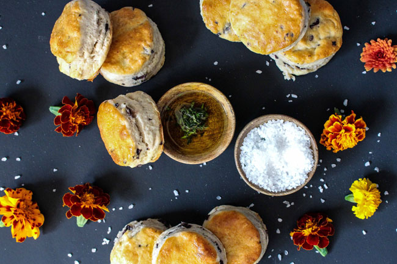

Let us help you create world class products! Contact us to book a tasting panel.
The Tasting Panel is a sister company to Vibrand Research, and part of the Vibrand Group of research companies. As part of our varied work at Vibrand, we have been conducting tasting panels for our clients for some time, and realised that there was a need to expand this service.
Simply put, The Tasting Panel conducts tasting panels! We convene (typically) 200 consumers in relaxed home environments where we offer them blind tastings of products. They are asked to fill out a questionnaire, which is carefully designed by our expert team. The complexity of the questionnaire depends on the nature of the project (see our toolbox), but we prefer to keep things as simple as possible.
We place great value on evaluating products in the environment in which they are consumed. We don’t believe in testing booths, laboratory settings, external sensory elimination and the like. We are interested in evaluating food and drink in real life environments. We believe this creates a relaxed, realistic consumer experience which delivers superior, more accurate results. It also brings cost savings that are passed onto our clients. So no white coats are allowed at our tastings!
And while we call ourselves the Tasting Panel, we do also offer product testing – from razors to cosmetics, washing powder to floor cleaner, we will find a way to test it.
So whether you are deciding to launch a new product, tweak an existing one, introduce a limited edition, or evaluate competitor products against your own – The Tasting Panel can provide the answer.
Worried there is too much garlic in your Chicken a la King? That your cheese is too rubbery? That your yoghurt is too lumpy? That your kitchen cleaner leaves residue or that your moisturiser is too thick?
Want to know whether your competitors’ ice cream is better than yours? Should yours be creamier? What variants are likely to hit the spot this summer? Or do you need to choose which of three limited editions variants to launch?
Perhaps you’re a retailer and want to be sure that your own brands are better than your competitors’?
Want to know whether your beer is too bitter, your brandy too oaky, your wine too acidic, your RTD too sweet?
We’ll recommend the right approach from our toolbox (see here) - from the simple to the complex; from the 2 product face -off to multi product preference mapping; from JAR (Just About Right) to cluster to principal component analysis, we have the methodology to meet your needs.
To answer these and a thousand other questions you may have, The Tasting Panel has the solution.
